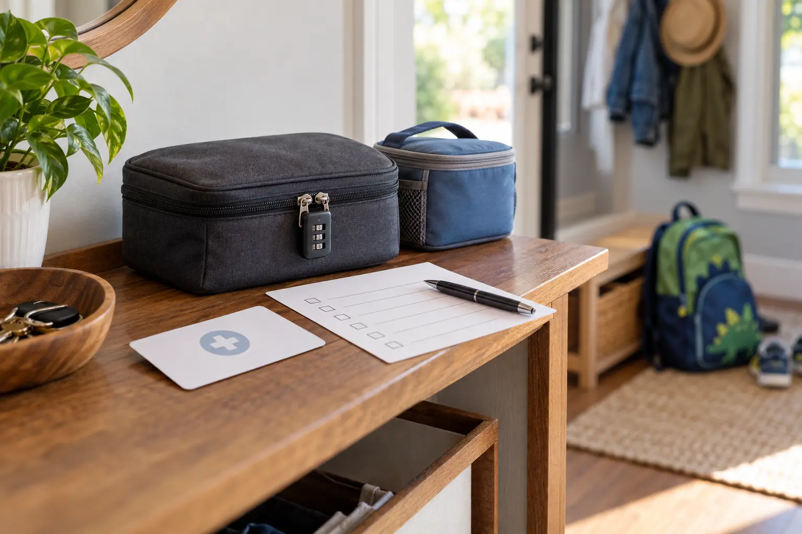

What
Medicine name, strength, form, current label directions and the person it belongs to. Keep different medicines in their own labeled containers.
FAMILY SYSTEM · ADULT CONTROL
The hotel counter, day bag and borrowed refrigerator are not neutral space. Decide who carries each medicine, how it stays inaccessible to children, and what information travels with it before the family leaves home.

A purse, suitcase pocket, hotel counter or child-resistant bottle can still be reached, opened, forgotten or exposed to heat. The FDA advises keeping medicines out of children's sight and reach, and warns that purses and briefcases are poor hiding places. Up and Away advises keeping medicine in its original child-resistant container at home or away and fully re-locking the cap after every use.
Away from home, the system needs four layers: the correct labeled medicine, one named adult who controls it, storage that matches the label and keeps it inaccessible, and a current written list that another responsible adult can understand. A lockable pouch can add a barrier, but it does not replace supervision or product-specific storage.
List prescription and over-the-counter medicines, allergies, the prescribing or managing clinician, pharmacy contact, doses exactly as directed and critical device or supply needs. Do not invent abbreviations another caregiver may misunderstand. Keep a paper copy with the responsible adult and a secure backup available to an emergency contact when appropriate.
The FDA recommends original labeled containers whenever possible and warns against combining different medicines in one bottle. CDC international-travel guidance also says to keep medicines in original labeled containers and bring copies of prescriptions. A short local trip may not involve border rules, but the identity and instruction benefits still matter.
If a pill organizer is necessary, ask the pharmacist how to preserve identification and safety. Many organizers are not child-resistant. Never let a tidy organizer erase the information needed to identify a dose.
Name a primary and backup adult. The primary holds the medicine; the backup knows the plan but does not carry a duplicate loose supply unless the prescriber or pharmacist has recommended that arrangement. During a handoff, both adults use the four-point record. The family hotel-room system is useful only after medicine has its own controlled location.
Read every label. Some medicines have temperature, light, moisture or refrigeration limits. A generic cooler is not automatically correct, direct contact with ice may be wrong, and a hotel refrigerator may freeze, warm or be accessible to children. Ask the dispensing pharmacist for the exact storage range, permitted travel duration and what to do after an excursion outside that range.
If electricity or refrigeration is critical, build a documented backup with the pharmacist or care team. Do not copy an insulin, epinephrine, antibiotic or biologic plan from another family; products and formulations differ.
The final step prevents the common failure where medicine lives in a suitcase for days after the trip. Add the reset to the same return-home routine used for chargers and laundry.
Day trip: the responsible adult keeps medicine with them, not unattended in a hot or freezing vehicle. Build access around the actual outing and the family first-aid kit, but keep routine medicine identifiable and separate from loose supplies.
Hotel or rental: choose the storage location before bags explode across the room. Do not use a bathroom counter, bedside table, suitcase floor or unlocked mini-fridge simply because it is convenient. Ask the property about a secure option without assuming staff can refrigerate or manage medicine.
Camp or remote day: the label and clinician plan still control. Protect from water and temperature without hiding the medicine so thoroughly that the responsible adult cannot reach it. Pair the plan with the no-cell-service family plan and identify emergency access before leaving coverage.
Air or international travel: CDC advises carrying medicines in carry-on belongings and checking destination laws. TSA, airline and foreign-country rules can differ. Verify official requirements for the exact medicine, device and destination before travel; do not rely on a generic packing list.
Never convert a medication schedule by intuition. Ask the prescriber or pharmacist before departure how to handle a time-zone change, overnight travel, vomiting, a missed dose or an unexpected delay. Write the answer in local clock times if that is what the clinician recommends. A phone alarm can prompt the adult, but it does not confirm that the correct medicine was given.
If a child may have swallowed, touched or received the wrong medicine, do not wait for symptoms or improvise vomiting. In the United States, call Poison Help at 1-800-222-1222 for expert guidance; call 911 for collapse, seizure, trouble breathing or another life-threatening emergency. Keep the container available so the exact product can be identified.
For a severe allergic reaction, follow the child's current emergency plan and prescribed device instructions and call emergency services. Use the food-allergy outing plan to organize the broader communication and exit decisions.
This routine is a useful companion to the family day-trip reset: restore the system while the missing piece is still obvious.
MAKE THE DAY COUNT
Build the plan your family can finish well, then leave enough energy for the ride home.
More family plans